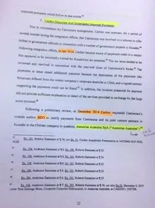
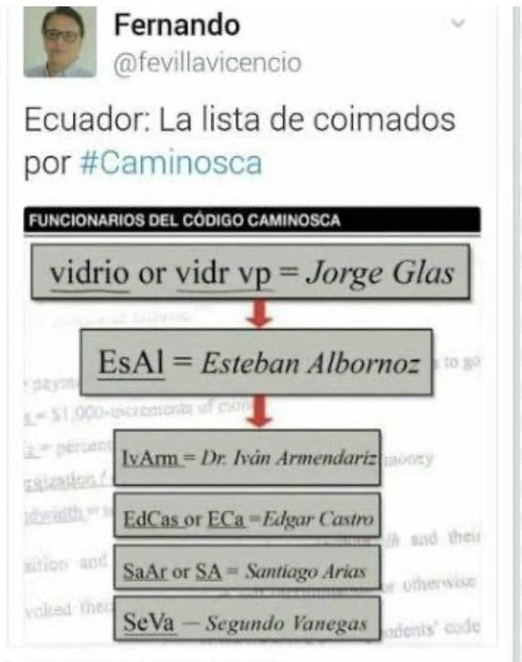
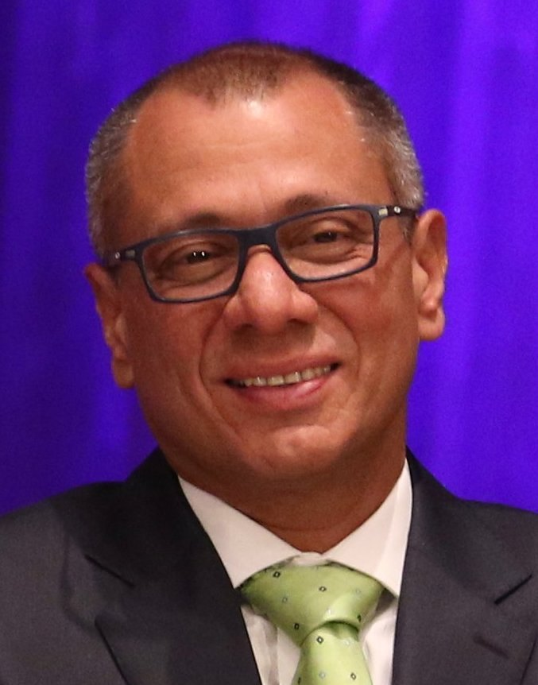
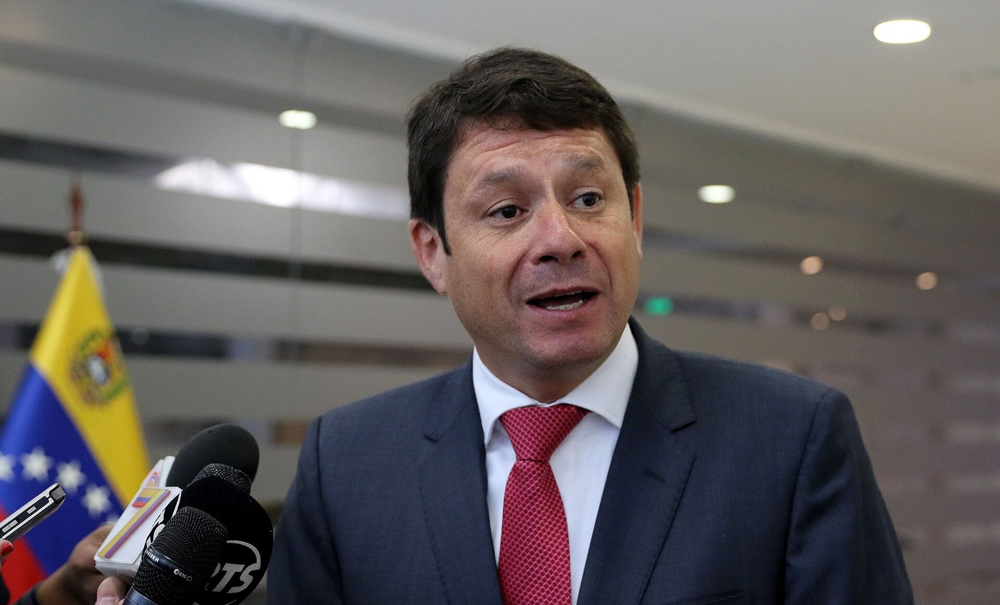
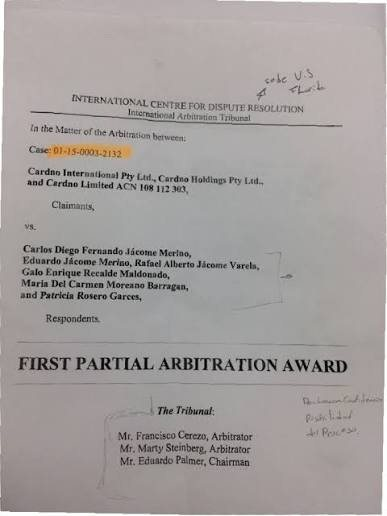
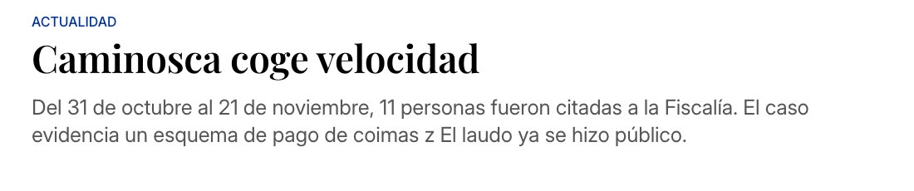
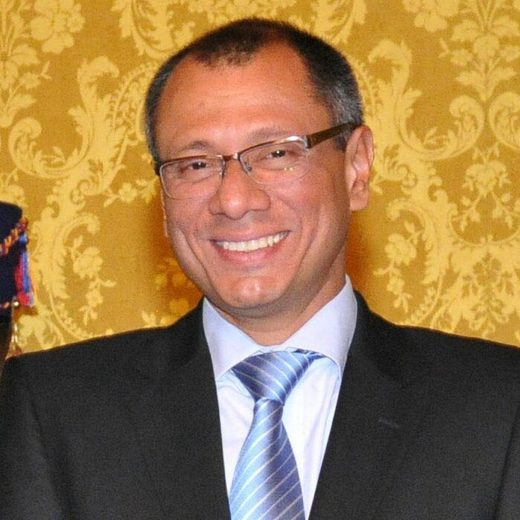
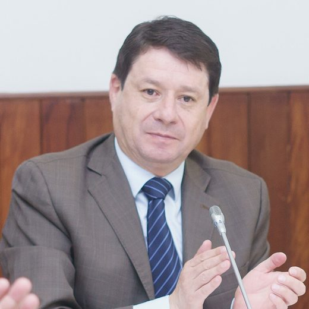

A company that designed the country
To understand Caminosca, you have to understand what it did. It did not build dams. It designed them and then made sure they were built properly. Founded in Quito on March 13, 1976, by engineer Carlos Jácome Merino, the firm signed the studies and the oversight for the Correa government's biggest projects: Sopladora, Toachi Pilatón and Minas San Francisco, plus work for Petroamazonas. Between 2012 and 2014 it billed about 100 million dollars, 80 percent of it from the state.

In mid-2014 the Australian firm Cardno bought the company for 18 million dollars. It wanted a foothold in Ecuador. What it bought was a problem: within months its auditors found payments that did not add up. On January 20, 2015, the firm BDO reviewed the accounts and found no products, advisory work or services to justify millions transferred to two foreign companies. On March 2, 2015, Cardno told the Australian stock exchange it was investigating irregular payments by its Ecuadorian subsidiary. In 2016 it announced it was divesting it.
A case no one was meant to read
Cardno took Caminosca's former owners to private arbitration in the United States. That kind of proceeding is not made public. Both sides agreed to confidentiality. The key evidence was a forensic report by Kroll, the world's largest corporate investigations firm, which reconstructed emails, calendars, transfers and the identity of the shell companies.


Diario Expreso obtained the arbitration award and published it on February 13, 2017, under a headline that said what mattered: a private lawsuit exposes kickbacks in the public sector. The second part ran the next day. The tribunal had found it reasonable, and supported by the evidence, that Caminosca disguised payments to officials through fictitious expenses and kept a parallel set of books to record local payments, presumably in cash.
I meet with Edcas in the car and we agree on a dh = 350. Energización via Europe.
Calendar entry cited in the arbitration award
The scheme relied on two paper companies: Asesorías Australes, registered in Chile, and Crown Mergers and Acquisitions, in Spain. Both were dormant, with ghost addresses and empty websites, and both were set up by employees of Mossack Fonseca, the Panamanian law firm at the center of the Panama Papers. Caminosca paid them for subcontracts that never existed. The money went to accounts in the Bahamas, Brazil, Spain and the United States. Ecuador's Superintendency of Companies confirmed that neither was authorized to do business in the country.
There were also smaller cash payments, between 15,000 and 90,000 dollars per delivery, and fictitious loans granted shortly before each contract award. Some spreadsheets showed two payments of 30,000 dollars, in January and February 2013, under the heading "Hidroeléctrico Vidrio, campaña política" (Vidrio hydroelectric, political campaign).
Speaking in kilobits
Carlos Jácome kept a calendar in code. Nobody wrote the word bribe. The share of money going to an official was called kbps, like the speed of an internet connection. The percentage of the total contract was MHz. The flow of the payment was Energización. The total was Bandwidth. A dh was a payment to an official. Projects had numbers and officials had aliases.
The 100 kbps for Vidrio are split 50% for project 415 and 50% for project 476.
Internal Caminosca email cited in the award

Project 415 was Sopladora, a hydroelectric plant with a 46 million dollar oversight contract. Project 476 was Toachi Pilatón, worth 21 million. Vidrio, Spanish for glass, was the vice president of the Republic, Jorge Glas. Other entries listed him as jGlas or simply VP. According to the audit, his share was 100,000 dollars.
Speaking in kilobits
- kbps
- Share of the kickback money
- MHz
- Percentage of the total contract
- Energización
- Payment flow
- Bandwidth
- Total payment
- 415
- Sopladora project, $46 million
- 476
- Toachi Pilatón project, $21 million
- Vidrio · jGlas · VP
- Jorge Glas, vice president
- EsAl
- Esteban Albornoz, electricity minister
- SeVA
- Segundo Venegas, Celec
- LAO
- Juan Leonardo Espinosa Abad, Celec
- SaAr
- Santiago Arias, Celec
- IvArm
- Iván Armendáriz, Celec

From Quito to the Bahamas
- 01CaminoscaBills the state for oversight contracts: 137 million between 2009 and 2013
- 02Fictitious subcontractsInvoices from Asesorías Australes (Chile) and Crown Mergers (Spain), dormant Mossack Fonseca companies
- 03Offshore accountsBahamas, Brazil, Spain and Florida: 3.33 million
- 04Cash and loansDeliveries of 15,000 to 90,000 dollars and fictitious loans before each contract award
- 05Seven aliasesVidrio, EsAl, Edcas, SaAr, LAO, SeVA, IvArm
Reconstruction based on the arbitration award and the Kroll report cited by Expreso.
The list went on. EsAl was Esteban Albornoz, electricity minister and later an Alianza País assembly member. Edcas was Edgar Castro, manager of Toachi Pilatón. SaAr, Santiago Arias, manager of Minas San Francisco. LAO, Juan Leonardo Espinosa Abad, manager of Sopladora. SeVA, Segundo Vanegas, of the Sopladora technical committee. IvArm, Iván Armendáriz, of the Toachi Pilatón subcommittee. Seven names. Two of them, Expreso reported, belonged to the ruling party's political leadership.
Page 53
The tribunal has made no finding as to the guilt of any public official.
Cardno arbitration award against Caminosca's former owners, page 53The award carries a caveat the defense repeated for months. On page 53 the tribunal notes that it made no finding as to the guilt of any public official. What it did establish was that the money left Caminosca through fake subcontracts and that the executives, when asked where it went, invoked their right against self-incrimination. Faced with that silence, the tribunal accepted Kroll's reading and ruled for Cardno. The former owners appealed.

Glas reacted quickly. He went to Attorney General Galo Chiriboga to ask that the story be investigated, said someone was trying to sow suspicion and gave a sworn statement before a notary in Portoviejo. Albornoz said the Anti-Corruption Commission was relying on an incomplete award. Carlos Jácome and his partners declined to comment, citing the confidentiality of the arbitration. Cardno did not comment either.
A journalist, the first to testify in the Caminosca bribery case.
El Oriente headline, February 2017
How it ended
Before investigating the powerful, the system investigated the journalist. The first person summoned in the case was not an official: it was the author of the exposé, as El Oriente reported in 2017. Then came the eleven summoned, among them the vice president.


On March 21, 2017, prosecutor Silvia Juma, of the Preliminary Investigations Unit, opened case file 025-2017 into an alleged network of illicit payments to government officials. On July 6 the National Anti-Corruption Commission filed a formal complaint for bribery and extortion by a public official against Glas, Albornoz and the five Celec officials. In October 2017 the full award became public and the summonses accelerated: between October 31 and November 21 the Attorney General's Office summoned eleven people, including Glas, by then a vice president stripped of his duties, and Albornoz.
Then came silence. On December 27, 2018, after the case had passed through four attorneys general, acting prosecutor Ruth Palacios pulled the Manduriacu complaint, filed in 2015, out of the archive and merged it with the Caminosca complaint in a prosecutorial inquiry. In July 2019 the Solicitor General's Office celebrated having headed off a Cardno lawsuit against Inmobiliar over unpaid invoices. In 2020 the Anti-Corruption Commission asked for the investigation to be resumed. There is no record of any charges or verdict over Caminosca.
Jorge Glas did end up in prison, but for other cases. On December 13, 2017, he was sentenced to six years for criminal association in the Odebrecht case. On April 7, 2020, he received eight years for bribery in the Sobornos case. In June 2025 he was given thirteen more years for embezzlement in the reconstruction of Manabí after the 2016 earthquake. From December 2023 to April 2024 he lived in the Mexican embassy in Quito, until police stormed it to remove him on the night of April 5, 2024, and Mexico broke off relations with Ecuador. In January 2026 Colombia granted him citizenship and requested his transfer. Ecuador said no.
Esteban Albornoz stayed in the National Assembly until 2021. Cardno won a partial ruling in its favor in Miami and fought to collect 11 million dollars in 2016 invoices from the Ecuadorian state. Caminosca, the company, ceased to exist under that name. The power sector it oversaw, Sopladora and Toachi Pilatón included, still runs on the projects it reviewed.
What the exposé set off
- First Attorney General's Office investigation of GlasMarch 2017
- Impeachment trial request against the vice president2017
- Summoned to testify11, including Glas and Albornoz
- Manduriacu-Caminosca prosecutorial inquirySince December 2018
- Court ruling in the casePending
- Glas's sentences in other cases27 years combined
Updated September 5, 2026
Unanswered questions
- Who received in cash the payments logged as dh in the calendars
- Why the Attorney General's Office summoned Glas and Albornoz in 2017 and never filed charges
- What happened to the 11 million the state owed Cardno
- Whether any of the seven people with aliases returned anything
Step by step
- Mar 13, 1976Caminosca is born
Carlos Jácome Merino founds the consultancy in Quito.
- 2009-2013The big contracts
Oversight of Sopladora (46 million), Toachi Pilatón (21 million), Minas San Francisco and work for Petroamazonas.
- Mid-2014Cardno buys
The Australian firm pays 18 million for the company.
- Jan 20, 2015The audit
BDO reviews the accounts. There are no services behind the payments to Asesorías Australes and Crown Mergers.
- Mar 2, 2015Stock exchange notice
Cardno discloses in Australia that it is investigating irregular payments in Ecuador.
- Feb 13 and 14, 2017Expreso publishes
Two installments with the contents of the arbitration award: the codes, the aliases and the 3.3 million.
- Feb 16, 2017The journalist is summoned
The Attorney General's Office summons Andersson Boscán to give a statement. He is the first person summoned in the case.
- Mar 21, 2017Preliminary investigation
Prosecutor Silvia Juma opens case file 025-2017.
- Jul 6, 2017Formal complaint
The National Anti-Corruption Commission files a complaint against Glas, Albornoz and five Celec officials for bribery and extortion by a public official.
- Oct 31 - Nov 21, 2017Eleven summoned
With the award now public, the Attorney General's Office summons Glas, Albornoz, CREO assembly members and Celec representatives.
- Dec 13, 2017Glas convicted
Six years for criminal association in the Odebrecht case. Not Caminosca.
- Dec 27, 2018Prosecutorial inquiry
Acting prosecutor Ruth Palacios revives Manduriacu and Caminosca after four attorneys general.
- 2020Calls to resume
The Anti-Corruption Commission asks the Attorney General's Office to revive the investigation filed in 2017.
- Apr 5, 2024The embassy
Police enter the Mexican embassy and arrest Glas, who had been sheltering there since December 2023.
- Jun 2025Third conviction
Thirteen years for embezzlement in the reconstruction of Manabí. That makes 27 years across three cases. None of them is Caminosca.
Who's who

Jorge Glas
Vice president of the Republic (2013-2018). Alias Vidrio, jGlas or VP in the calendars. 100,000 dollars according to the audit.

Esteban Albornoz
Electricity minister, later an Alianza País assembly member. Alias EsAl.
Carlos Jácome Merino
Founder and shareholder of Caminosca. He kept the calendar with the code words.
Edgar Castro, Santiago Arias, Juan L. Espinosa, Segundo Vanegas, Iván Armendáriz
Celec officials at Toachi Pilatón, Minas San Francisco and Sopladora. Aliases Edcas, SaAr, LAO, SeVA and IvArm.
Cardno
Australian multinational that bought Caminosca and exposed the scheme when it sued the former owners.
Photos via Wikimedia Commons. Jorge Glas: Ministerio de Relaciones Exteriores from Perú (CC BY-SA 2.0); Esteban Albornoz: Asamblea Nacional del Ecuador from QUito, Ecuador (CC BY-SA 2.0).
Responses and reactions
- Jorge Glas
He went to the attorney general to ask that the story be investigated, said someone was trying to sow suspicion and gave a sworn statement before a notary in Portoviejo.
- Esteban Albornoz
He said the Anti-Corruption Commission used an incomplete award and cited page 53: the tribunal made no findings on the guilt of any official.
- Carlos Jácome and partners
They declined to comment, citing the confidentiality of the arbitration. Before the tribunal they invoked their right against self-incrimination.
- Cardno
Its representatives in Australia did not comment.